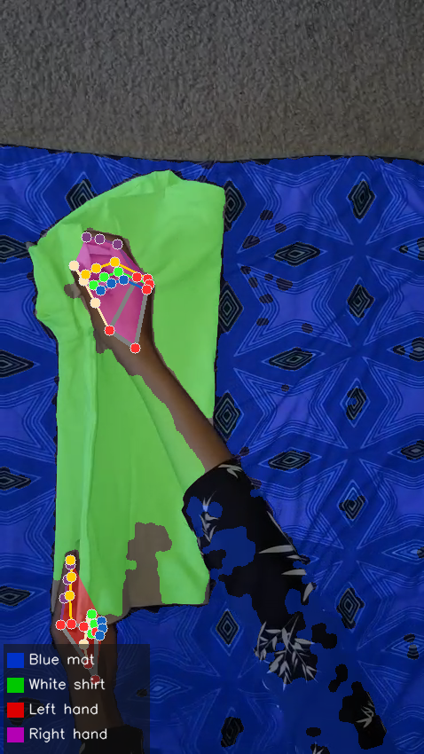
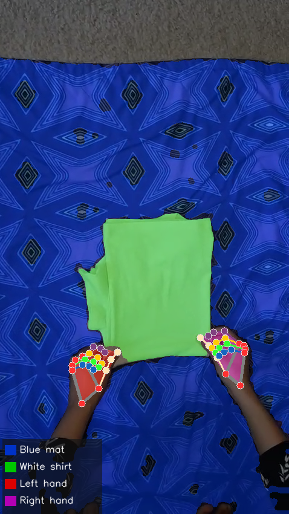
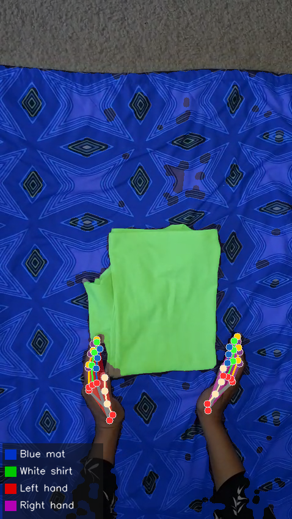

Dataset
First-person household activity recordings with multi-modal annotations
CORE DATA
Home Hands 10
10 videos of unscripted egocentric household activities captured from first-person view with hand pose and semantic segmentation
10
Videos
516
Frames
21
Keypoints
2
Hands Per Frame
4
Segmentation Classes
10
Tasks





Modalities
Three synchronized data streams captured per recording session
📹
RGB Videos
Raw first-person egocentric footage of household tasks at 30fps
- Videos10
- FPS30
- Resolution478 × 850
- FormatMP4
✋
Hand Pose
21 keypoint skeleton tracking per hand using MediaPipe Hand Landmarker
- Keypoints21
- Hands2
- Detection Rate100%
- FormatJSON
🎨
Segmentation
Semantic segmentation with 4 classes using HSV thresholding and MediaPipe
- Classes4
- Masks516
- GranularityPixel Level
- FormatPNG
🔵Background
🟢Clothing
🔴Left Hand
🟣Right Hand
Download
Access annotations, segmentation masks, and raw video clips
Python
import json
# Load the Home Hands 10 annotation file
with open('assets/data/annotations.json', 'r') as f:
data = json.load(f)
# Iterate over annotated frames
for frame_id, info in data.items():
action = info.get('action', 'N/A') # Task label
keypoints = info.get('hand_keypoints', {}) # Detected hands
print(f"Frame {frame_id}: {action} — {len(keypoints)} hand(s)")